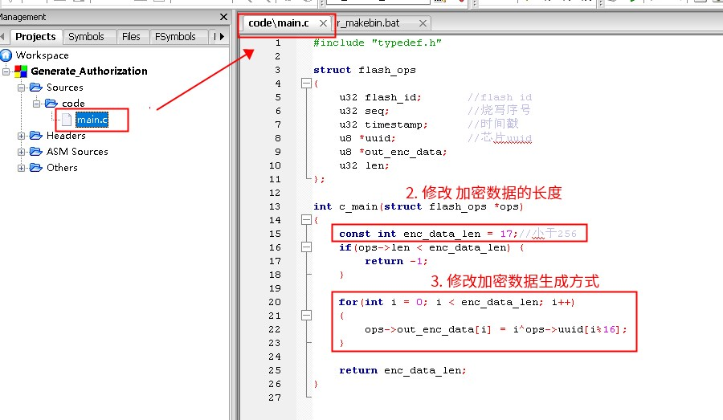
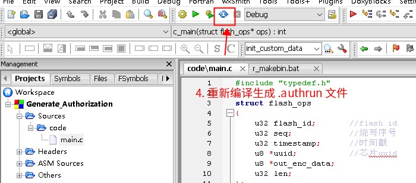

4.5. Supported Chip Models and Authorization Executable Project Templates
4.5.1. Chip models supported by the programmer for multi-algorithm authorization
The chip models for which the programmer supports multi-algorithm authorization, and the supported authorization executable size for each, are as follows:
Chip model |
Supported authorization executable size |
|---|---|
AD17N |
512 |
AD15N, AE15N |
2K |
AC632N, AE632N |
4K |
AC695X, AC635N, AC6083, AE695N, |
4K |
AC696X, AC636N, AC608N, AC706N, |
8k |
The following models require isd_download version 4.2.54 or later, and the following fields must be configured in isd_config.ini:
[EXTRA_CFG_PARAM]
OTP_CFG_SIZE=512;
#For AC707N, AW34N and AD24N chips, a minimum value of 128 is recommended;
#For other models, a minimum value of 256 is recommended; the default value of the public SDK is usually fine;
Chip model |
Supported authorization executable size |
|---|---|
AD21N |
1K |
AC82N, AD18N, AC129N, AD12N |
2K |
AD21N, AD23N, AD24N, AW30N, |
4K |
AC707N, AW34N, AC704N, AC705N, |
8K supported by default |
Important
Notes:
1. The total size of the authorization executable equals static space + dynamic space:
Static space: SIZE = the total size of the .text +.data +.bss sections
Dynamic space: add the linker flag –plugin-opt=-warn-stack-size=64 in the Code::Blocks build environment; the build then reports the stack usage of each function. For details, see Why Does Linking Warn "stack size limit exceeded"?
When you click Rebuild, the "Build log" window shows the sizes of the data sections
2. Different models have different amounts of RAM. Do not make the algorithm too complex, so that the built executable does not become too large and fail to run during programming;
3. Do not use too large a stack; change buffers defined on the stack to global variables. Otherwise, even if the static space is smaller than the supported executable size, the executable may still hang when it runs during programming;
4. AC701N, JL701N, etc. can be used with or without OTP_CFG_SIZE=512, depending on the SDK design. Newer SDK versions generally support configuring OTP_CFG_SIZE=512, i.e., the flash parameters are written to the otp_cfg area; older SDKs write them to the end of the flash;
4.5.2. Authorization executable project template download
Chips that support multi-algorithm authorization come in 3 architectures. The download links of the authorization executable project templates for the different models are listed below (if you cannot determine which project template matches your chip, contact Jieli):
q32s chip architecture
Corresponding chip models: AC632N, AW31N, AW33N
Corresponding project template: click here to download the project template
pi32 chip architecture
Corresponding chip models: AC82N, AD14N, AC104N, AD15N, AD17N, AD24N, AW30N
Corresponding project template: click here to download the project template
pi32v2 chip architecture
Corresponding chip models:
all models other than thoseof the q32s and pi32 chip architectures aboveCorresponding project template: click here to download the project template
4.5.3. SDK patches that support multi-algorithm authorization
Note
Most SDKs support multi-algorithm authorization natively and need no patch; see Add authorization data verification to the algorithm library (.a file) directly.
If the SDK reports the link error "sys_cfg_read_otp undefined", update the corresponding patch; if you cannot find a patch, request one as described in Requesting a multi-algorithm authorization patch
The SDK patches currently available for multi-algorithm authorization are as follows:
Chip type |
Patch |
|---|---|
AC632N |
|
695N/635N |
695N/635N patch download (click here to download) (2024/05/21) |
696N/636N |
696N/636N patch download (click here to download) (2024/07/12) |
697N |
|
700N |
|
701N |
|
AD14N |
|
AD15N |
|
AD16N |
|
AD17N |
|
706N |
How to use the patch: find cpu.a in the tools directory of the corresponding SDK and replace it.
4.5.4. Requesting a multi-algorithm authorization patch
If you cannot find the chip model you need, contact Jieli at weiyushu@zh-jieli.com
In the email, state the chip model and the SDK version, and attach the cpu.a of your current SDK:
4.5.4.1. Email request format
To ensure that your request is handled promptly and accurately, send your email in the following format:
Email subject: [Multi-algorithm authorization patch request]-[chip model]-[SDK version] (in Chinese: [申请多算法授权补丁]-[芯片型号]-[sdk版本])
Example: [申请多算法授权补丁]-AC632N-ac63_bt_sdk_release_v2.3.0
4.5.4.2. Notes
Make sure the email subject is clear and accurate so that your request can be quickly identified and processed.
The
cpu.afile in the attachment must be the version for the current chip, to avoid compatibility issues.If you have any questions or need to explain anything further, describe it in detail in the email.
4.5.5. Detailed usage
Download the template project for your chip. (If you cannot find the chip model you need, contact Jieli.)
In the
r_makebin.batscript, changeAuthorization_IDto the agreed ID (234 in the example)Valid ID range: 64 to 999

Important
Note: when you modify the following two lines in r_makebin.bat, do not add any extra spaces (before or after the equals sign, or at the end of the line); bat scripts are sensitive to spaces.
set Authorization_ID=234
set CHIP_TYPE=AC695X
In the
code/main.cfile, change the length of the returned encrypted data (i.e., the authorization data)In the
code/main.cfile, change how the returned encrypted data (i.e., the authorization data) is generatedNote
In the template project, the example XORs the flash uuid and uses the result as the encrypted data. This is a weak method; in general, algorithm companies are advised to replace it with a custom method that others do not know and cannot easily crack

Note
While programming the chip, the programmer calls the c_main function in the .authrun file
When the programmer calls the callback function c_main, the values flash_id, seq, timestamp and uuid in the ops structure have already been filled in by the programmer
The callback function c_main is responsible for filling out_enc_data and returning out_len
The programmer writes the content of out_enc_data, of length out_len, into the chip
The programmer's processing flow, in pseudocode, is as follows:
//--------- struct flash_ops ops; // This code is implemented on the programmer side; algorithm companies do not need to care about it ops.flash_id = get_flash_id(); // This code is implemented on the programmer side; algorithm companies do not need to care about it ops.seq = get_program_seq(); // This code is implemented on the programmer side; algorithm companies do not need to care about it ops.timestamp = get_timestamp();// This code is implemented on the programmer side; algorithm companies do not need to care about it ops.uuid = get_flash_uuid(); // This code is implemented on the programmer side; algorithm companies do not need to care about it ops.out_enc_data = buf; // This code is implemented on the programmer side; algorithm companies do not need to care about it ops.len = buf_size; // This code is implemented on the programmer side; algorithm companies do not need to care about it //--------- // Note: .uuid is always 16 bytes long // The algorithm company must implement the c_main function in the .authrun int out_len = c_main(&ops); // Call the c_main callback function of the .authrun // After c_main is called, out_enc_data should have been filled and out_len (the length of the encrypted data to write to the chip) returned // out_len generally cannot exceed 255; for some chip models with fewer resources, the actual limit is smaller. Actual testing prevails write_to_flash(get_program_address(), // This code is implemented on the programmer side; algorithm companies do not need to care about it ops.out_enc_data, // This code is implemented on the programmer side; algorithm companies do not need to care about it out_len); // This code is implemented on the programmer side; algorithm companies do not need to care about it
In Code::Blocks, click Rebuild to generate the
.authrunfile
Find the corresponding
.authrunfile in theoutputdirectory
Upload the
.authrunfile to the Jieli server so that it can be sold later
Important
Note:
In general, do not send the
.authrunfile directly to customers